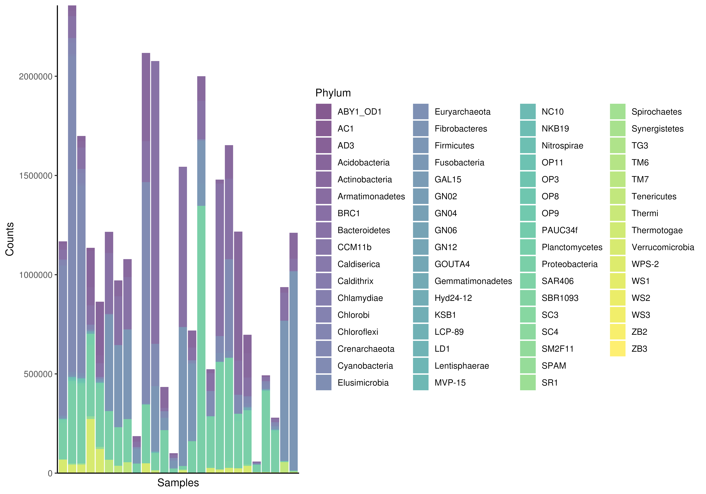
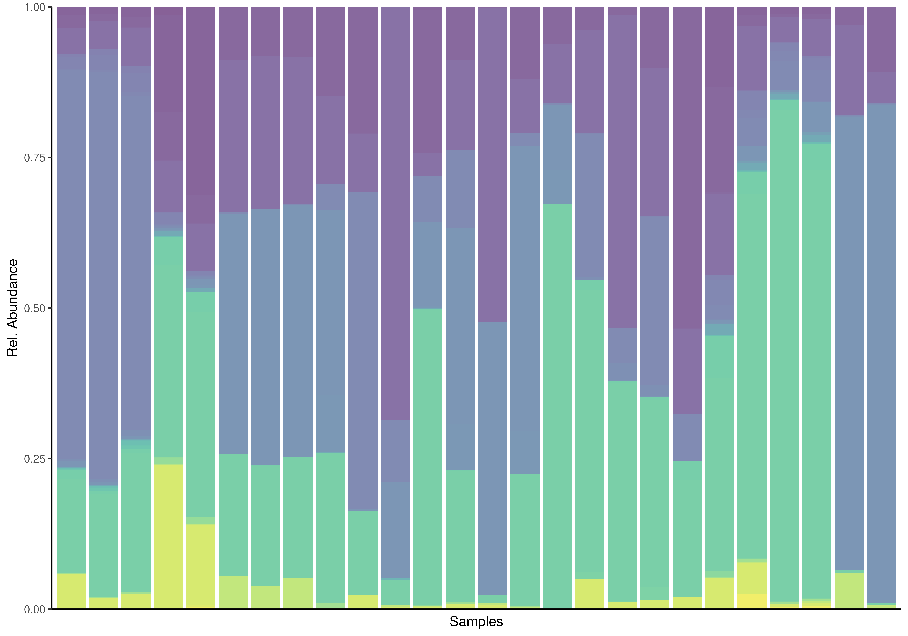
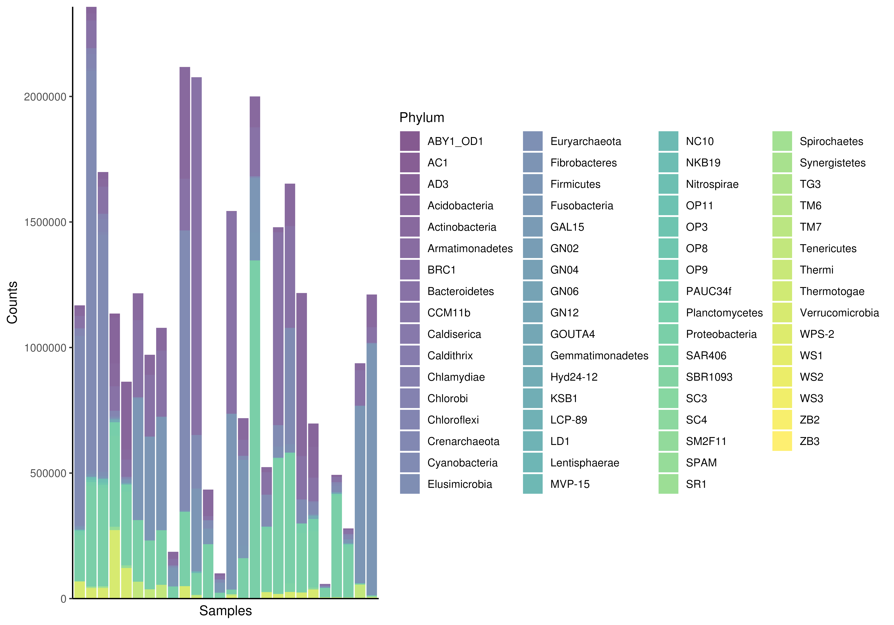
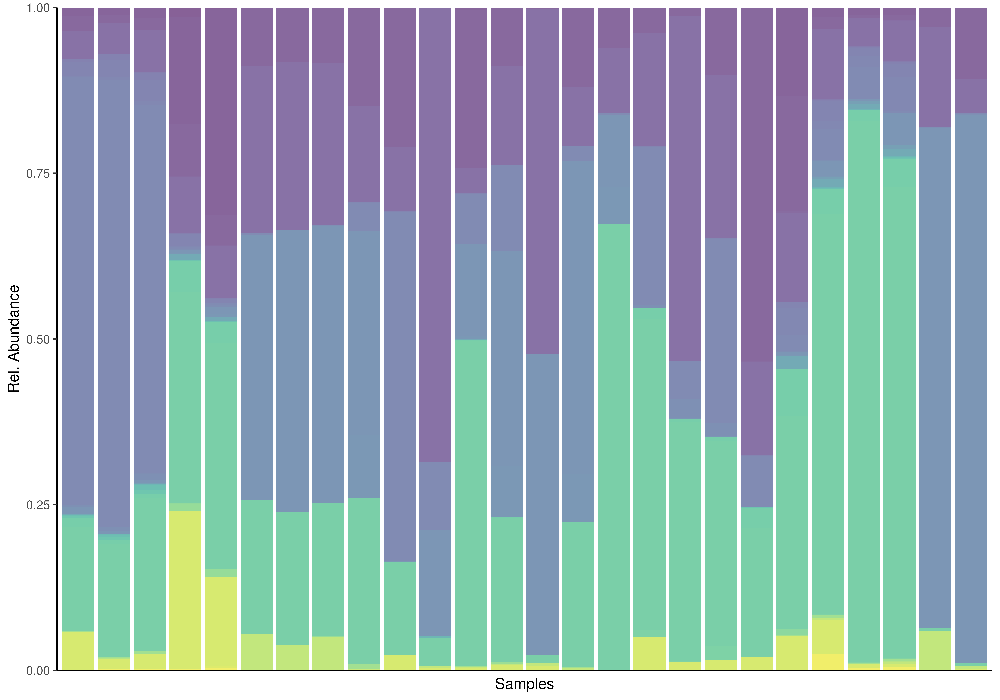
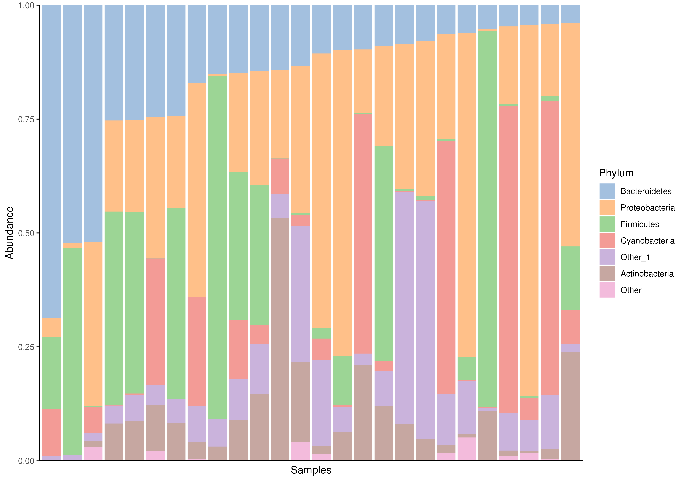
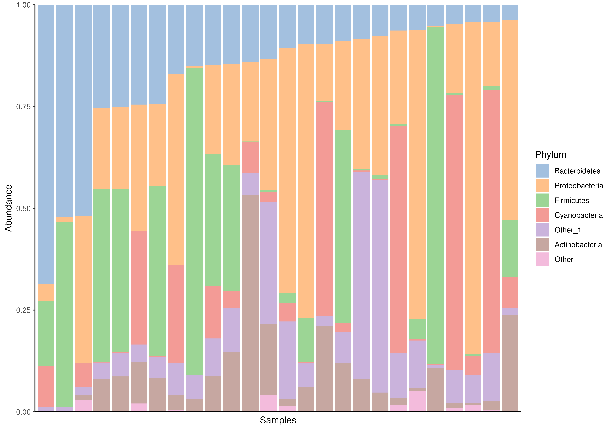

Plotting abundance data
plotAbundance.RdplotAbundance() creates a barplot of feature abundances, typically
used to visualize the relative abundance of features at a specific taxonomy
rank.
plotAbundance(x, ...)
# S4 method for class 'SummarizedExperiment'
plotAbundance(
x,
assay.type = assay_name,
assay_name = "counts",
layout = "bar",
...
)Arguments
- x
a
SummarizedExperimentobject.- ...
additional parameters for plotting.
group:Character scalar. Specifies the group for agglomeration. Must be a value fromcolnames(rowData(x)). IfNULL, agglomeration is not applied. (Default:NULL)as.relative:Character scalar. Should the relative values be calculated? (Default:FALSE)col.var:Character scalar. Selects a column fromcolDatato be plotted below the abundance plot. Continuous numeric values will be plotted as point, whereas factors and character will be plotted as colour-code bar. (Default:NULL)order.row.by:Character scalar. How to order abundance value. By name ("name") for sorting the taxonomic labels alphabetically, by abundance ("abund") to sort by abundance values or by a reverse order of abundance values ("revabund"). (Default:"name")row.levels:Character vector. Specifies order of rows in a plot. Can be combined withorder.row.byto control order of only certain rows. IfNULL, the order followsorder.row.by. (Default:NULL)order.col.by:Character scalar. from the chosen rank of abundance data or fromcolDatato select values to order the abundance plot by. (Default:NULL)col.levels:Character vector. Specifies order of columns in a plot. Can be combined withorder.col.byto control order of only certain columns. IfNULL, the order followsorder.col.by. (Default:NULL)decreasing:Logical scalar. If theorder.col.byis defined and the values are numeric, should the values used to order in decreasing or increasing fashion? (Default:FALSE)facet.rows:Logical scalar. Should the rows in the plot be spitted into facets? (Default:FALSE)facet.cols:Logical scalar. Should the columns in the plot be spitted into facets? (Default:FALSE)ncol:Numeric scalar. if facets are applied,ncoldefines many columns should be for plotting the different facets. (Default:2)scalesCharacter scalar. Defines the behavior of the scales of each facet. The value is passed intofacet_wrap. (Default:"fixed")
See
mia-plot-argsfor more details i.e. callhelp("mia-plot-args")- assay.type
Character scalarvalue defining which assay data to use. (Default:"relabundance")- assay_name
Deprecate. Use
assay.typeinstead.- layout
Character scalar. Either “bar” or “point”.
Details
It is recommended to handle subsetting, agglomeration, and transformation
outside this function. However, agglomeration and relative transformation
can be applied using the group and as.relative parameters,
respectively. If one of the TAXONOMY_RANKS is selected via
group, mia::agglomerateByRank() is used, otherwise
agglomerateByVariable() is applied.
Examples
data(GlobalPatterns, package="mia")
tse <- GlobalPatterns
# If rank is set to NULL (default), agglomeration is not done. However, note
# that there is maximum number of rows that can be plotted. That is why
# we take sample from the data.
set.seed(26348)
sample <- sample(rownames(tse), 20)
tse_sub <- tse[sample, ]
# Apply relative transformation
tse_sub <- transformAssay(tse_sub, method = "relabundance")
plotAbundance(tse_sub, assay.type = "relabundance")
 # Plotting counts using the first taxonomic rank as default
plotAbundance(
tse, assay.type="counts", group = "Phylum") +
labs(y="Counts")

# Using "Phylum" as rank. Apply relative transformation to "counts" assay.
plotAbundance(
tse, assay.type="counts", group = "Phylum", add_legend = FALSE,
as.relative = TRUE)

# Apply relative transform
tse <- transformAssay(tse, method = "relabundance")
# A feature from colData or taxon from chosen rank can be used for ordering
# samples.
plotAbundance(
tse, assay.type="relabundance", group = "Phylum",
order.col.by = "Bacteroidetes")
# Plotting counts using the first taxonomic rank as default
plotAbundance(
tse, assay.type="counts", group = "Phylum") +
labs(y="Counts")

# Using "Phylum" as rank. Apply relative transformation to "counts" assay.
plotAbundance(
tse, assay.type="counts", group = "Phylum", add_legend = FALSE,
as.relative = TRUE)

# Apply relative transform
tse <- transformAssay(tse, method = "relabundance")
# A feature from colData or taxon from chosen rank can be used for ordering
# samples.
plotAbundance(
tse, assay.type="relabundance", group = "Phylum",
order.col.by = "Bacteroidetes")
 # col.var from colData can be plotted together with abundance plot.
# Returned object is a list that includes two plot; other visualizes
## abundance other col.var.
plot <- plotAbundance(
tse, assay.type = "relabundance", group = "Phylum",
col.var = "SampleType")
# \donttest{
# These two plots can be combined with wrap_plots function from patchwork
# package
library(patchwork)
wrap_plots(plot, ncol = 1, heights = c(0.95, 0.05))
# col.var from colData can be plotted together with abundance plot.
# Returned object is a list that includes two plot; other visualizes
## abundance other col.var.
plot <- plotAbundance(
tse, assay.type = "relabundance", group = "Phylum",
col.var = "SampleType")
# \donttest{
# These two plots can be combined with wrap_plots function from patchwork
# package
library(patchwork)
wrap_plots(plot, ncol = 1, heights = c(0.95, 0.05))
 # }
# Same plot as above but showing sample IDs as labels for the x axis on the
# top plot. Moreover, we use facets
plot <- plotAbundance(
tse, assay.type = "relabundance",
group = "Phylum", col.var = "SampleType", add.legend = FALSE,
add.x.text = TRUE, facet.cols = TRUE, scales = "free_x") +
theme(axis.text.x = element_text(angle = 90))
plot
# }
# Same plot as above but showing sample IDs as labels for the x axis on the
# top plot. Moreover, we use facets
plot <- plotAbundance(
tse, assay.type = "relabundance",
group = "Phylum", col.var = "SampleType", add.legend = FALSE,
add.x.text = TRUE, facet.cols = TRUE, scales = "free_x") +
theme(axis.text.x = element_text(angle = 90))
plot
 # Compositional barplot with top 5 taxa and samples sorted by
# "Bacteroidetes"
# Getting top taxa on a Phylum level
tse <- transformAssay(tse, method = "relabundance")
tse_phylum <- agglomerateByRank(tse, rank = "Phylum")
top_taxa <- getTop(tse_phylum, top = 5, assay.type = "relabundance")
# Renaming the "Phylum" rank to keep only top taxa and the rest to "Other"
phylum_renamed <- lapply(rowData(tse)$Phylum, function(x){
if (x %in% top_taxa) {x} else {"Other"}})
rowData(tse)$Phylum <- as.character(phylum_renamed)
# Compositional barplot
plotAbundance(
tse, assay.type="relabundance", group = "Phylum",
order.row.by="abund", order.col.by = "Bacteroidetes")

# Compositional barplot with top 5 taxa and samples sorted by
# "Bacteroidetes"
# Getting top taxa on a Phylum level
tse <- transformAssay(tse, method = "relabundance")
tse_phylum <- agglomerateByRank(tse, rank = "Phylum")
top_taxa <- getTop(tse_phylum, top = 5, assay.type = "relabundance")
# Renaming the "Phylum" rank to keep only top taxa and the rest to "Other"
phylum_renamed <- lapply(rowData(tse)$Phylum, function(x){
if (x %in% top_taxa) {x} else {"Other"}})
rowData(tse)$Phylum <- as.character(phylum_renamed)
# Compositional barplot
plotAbundance(
tse, assay.type="relabundance", group = "Phylum",
order.row.by="abund", order.col.by = "Bacteroidetes")
